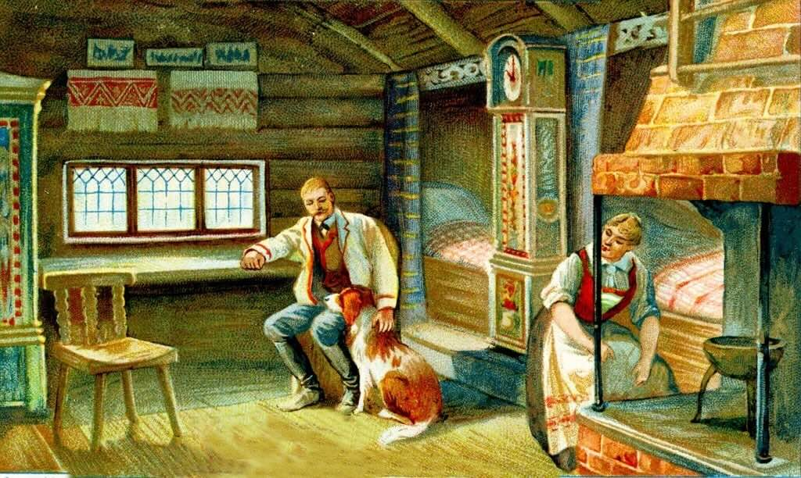
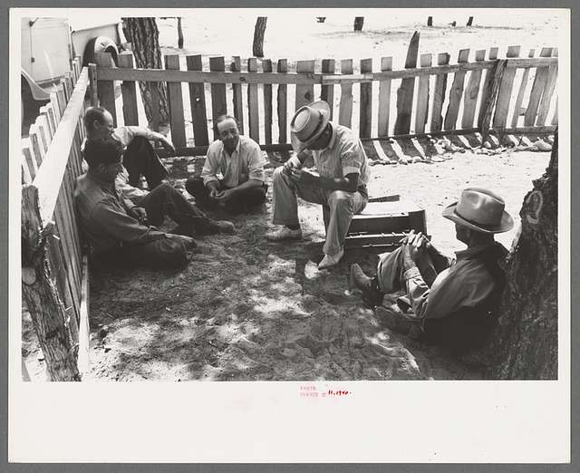
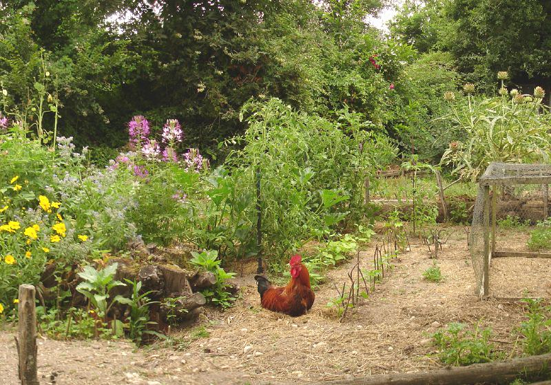

Early Homesteading
Homesteading began as a way for people to settle on land and build a self-sustaining life. This section covers the earliest examples of homesteading, from indigenous practices to early European settlers.
The Homestead Act of 1862
President Abraham Lincoln signed the Homestead Act, giving Americans the opportunity to claim land and develop it. This law significantly influenced westward expansion in the United States.
20th Century Homesteading
With the advent of modern technology and urbanization, homesteading saw both decline and resurgence. People continued homesteading, often as a lifestyle choice rather than out of necessity.
Modern Homesteading
Today, homesteading is experiencing a revival with a focus on sustainability, organic farming, and self-reliance. This modern movement draws on traditional practices but incorporates new technologies.
